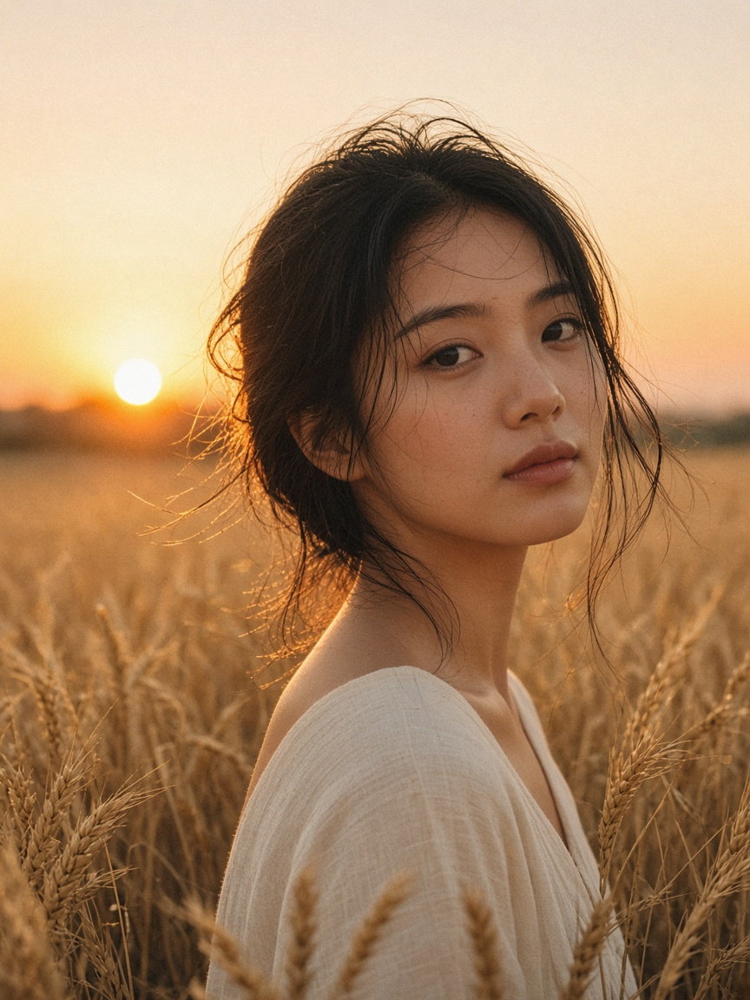

配色和字号沿用 App 现有的 FilmToneTheme：深色底 #121212、金色强调 #E2B56A。图标用 iOS 自带的 SF Symbols，和真机显示一致。

| 分类 | 工具 | 图标 | 范围 | 状态 |
|---|---|---|---|---|
| 光线 | 曝光 | -2 ~ +2 EV | 已有 | |
| 亮度 | -100 ~ 100 | 已有 | ||
| 对比度 | -100 ~ 100 | 已有 | ||
| 高光 | -100 ~ 100 | 已有 | ||
| 阴影 | -100 ~ 100 | 已有 | ||
| 白色 | -100 ~ 100 | 已有 | ||
| 黑色 | -100 ~ 100 | 已有 | ||
| 颜色 | 白平衡（色温 + 色调） | 各 -100 ~ 100 | 已有 | |
| 饱和度 | -100 ~ 100 | 已有 | ||
| 自然饱和度 | -100 ~ 100 | 已有 | ||
| 肤色（色相 + 亮度） | 各 -100 ~ 100 | 新增 | ||
| 细节 | 锐化 | 0 ~ 100 | 已有 | |
| 清晰度 | -100 ~ 100 | 已有 | ||
| 降噪 | 0 ~ 100 | 已有 | ||
| 效果 | 颗粒 | 0 ~ 100 | 已有 | |
| 暗角 | -100 ~ 100（负值压暗四角，正值提亮） | 新增 | ||
| 曲线 | RGB / 红 / 绿 / 蓝 | 已有，目前点不到 |